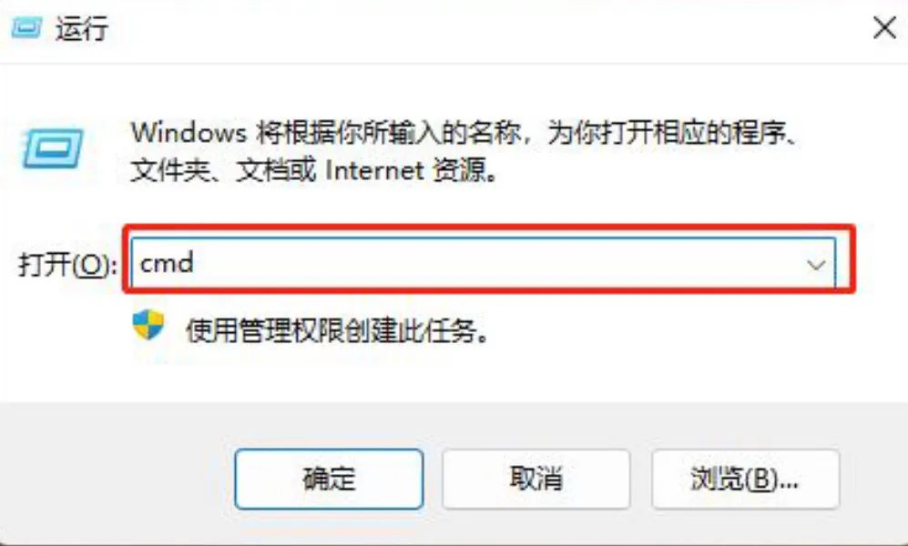
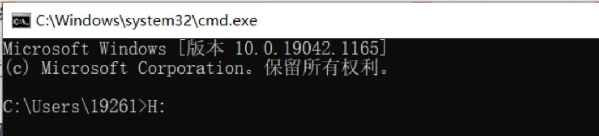

电脑cmd命令大全
在不同的操作系统环境下，命令提示符各不相同，在Windows环境下，命令行程序为cmd.exe，是一个32 位的命令行程序。
cmd是指命令提示符，是在操作系统中，提示进行命令输入的一种工作提示符。cmd是command的缩写，即命令行 。
本文为大家介绍一些常用且简单的cmd命令，希望能够帮助大家。（有些命令需要以管理员权限运行）
首先在桌面“Win+R”打开运行对话框输入cmd
{kind=link}
然后回车即可进入命令行窗口。
{kind=link}
1、启动计算器
calc
2、程序和功能
appwiz.cpl
3、证书管理实用程序
certmgr.msc
4、启动字符映射表
charmap
5、Chkdsk磁盘检查(管理员身份运行命令提示符)
chkdsk.exe
6、打开磁盘清理工具
cleanmgr
7、SQL SERVER 客户端网络实用工具
cliconfg
8、连接管理器配置文件安装程序
cmstp
9、CMD命令提示符
cmd.exe
10、自动关机命令
表示30秒后自动关机，
Shutdown -s -t 30l
取消定时关机
shutdown -a
表示30秒后自动重新启动
Shutdown -r -t 30
表示锁定计算机
rundll32 user32.dll,LockWorkStation
11、颜色管理，配置显示器和打印机等中的色彩
colorcpl
12、计算机管理
compmgmt.msc
13、备份或还原储存的用户名和密码
credwiz
14、打开系统组件服务
comexp.msc
15、控制面版
control
16、打开系统组件服务
dcomcnfg
17、显示颜色校准
Dccw
18、设备管理器
devmgmt.msc
19、屏幕辨别率
desk.cpl
20、磁盘碎片整理程序
dfrg.msc
21、结束进程，后面加名称
taskkill /im （名称）
22、磁盘管理
diskmgmt.msc
23、DVD播放器
dvdplay
24、检查DirectX信息
dxdiag
25、造字程序
eudcedit
26、事件查看器
eventvwr
27、打开资源管理器
explorer
28、Win防火墙
Firewall.cpl
29、传真封面编辑器
FXSCOVER
30、共享文件夹管理器
fsmgmt.msc
31、组策略
gpedit.msc
32、设备管理器
hdwwiz.cpl
33、Internet属性
inetcpl.cpl
34、区域
intl.cpl
35、木马捆绑工具，系统自带
iexpress
36、游戏控制器
joy.cpl
37、注销命令
logoff
38、本地用户和组
lusrmgr.msc
39、清除DNS缓存
ipconfig /flushdns
40、本机用户和组
lusrmgr.msc
41、鼠标属性
main.cpl
42、声音
mmsys.cpl
43、放大镜实用程序
magnify
44、显示内存运用情况
mem.exe
45、Win内存诊断程序
MdSched
46、同步命令
mobsync
47、系统配置实用程序
Msconfig.exe
48、微软支持诊断工具
msdt
49、系统信息
msinfo32
50、画图
mspaint
51、Win远程协助
Msra
52、远程桌面连接
mstsc
53、客户端配置
NAPCLCFG.MSC
54、网络连接
ncpa.cpl
55、屏幕“讲述人”
narrator
56、高级用户帐户控制面板，设置登陆安全相关的选项
Netplwiz
57、打开记事本
notepad
58、IP地址侦测器
Nslookup
59、ODBC数据源管理器
odbcad32
60、打开屏幕键盘
osk
61、计算机性能监测器
perfmon.msc
62、计算机性能监测器
perfmon
63、打印管理
printmanagement.msc
64、电源选项
powercfg.cpl
65、网络连接
Rasphone
66、创建系统修复光盘
Recdisc
67、资源监视器
Resmon
68、系统还原
Rstrui
69、注册表
regedit.exe
70、注册表编辑器
regedt32
71、组策略结果集
rsop.msc
72、备份状态与配置，就是查看系统是否已备份
sdclt
73、本地安全策略
secpol.msc
74、本地服务设置
services.msc
75、电脑扫描系统文件错误并复原
sfc
scannow
76、创建共享文件夹
shrpubw
77、文件签名验证程序
sigverif
78、Win激活，查看系统激活信息
slui
79、显示详细的许可证信息
slmgr.vbs -dlv
80、截图工具，支持无规则截图
snippingtool
81、录音机，没有录音时间的限制
soundrecorder
82、便笺
StikyNot
83、系统属性
sysdm.cpl
84、系统配置编辑器
sysedit
85、系统加密，一旦加密就不能解开，保护系统的双重密码
syskey
86、任务管理器(旧版)
taskmgr
87、任务计划程序
taskschd.msc
88、日期和时间
timedate.cpl
89、用户账户控制设置
UserAccountControlSettings
90、辅助工具管理器
utilman
91、高级安全Win防火墙
wf.msc
92、Win传真和扫描
WFS
93、扫描仪和拍照机向导
wiaacmgr
94、关于Win
winver
95、打开windows管理体系结构(WMI)
wmimgmt.msc
96、写字板
write
97、操作中心
wscui.cpl
98、Win更新
wuapp
99、windows脚本宿主设置
wscript
每条命令输入之后，直接按回车运行即可。